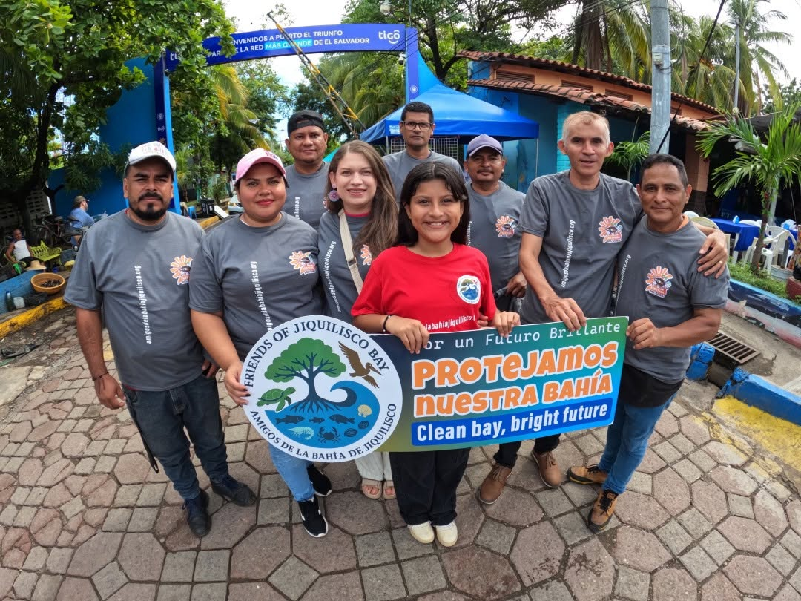
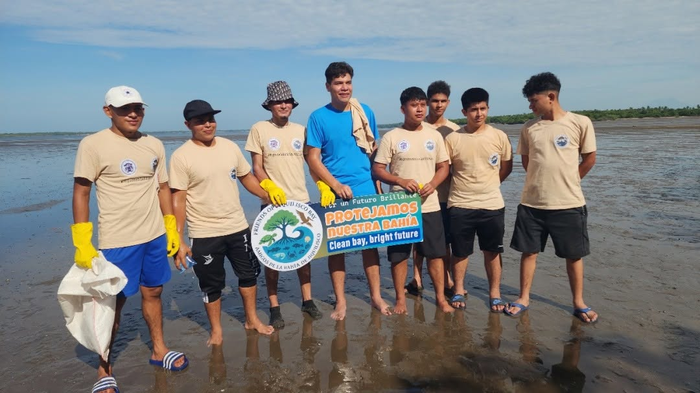

COMUNIDAD
Participación Comunitaria
Trabajamos junto a familias y líderes locales para crear conciencia y proteger la bahía.
BAHÍA DE JIQUILISCO • EL SALVADOR
Trabajando juntos para proteger sus ecosistemas, vida silvestre y comunidades.
NUESTRO IMPACTO
Proyectos reales. Personas reales. Una bahía más limpia y saludable.

HISTORIAS DE LA BAHÍA

Trabajamos junto a familias y líderes locales para crear conciencia y proteger la bahía.

Voluntarios se unen para retirar basura y mantener limpias nuestras playas y manglares.

Hemos donado más de 20 contenedores para desechos en el área del puerto de Puerto El Triunfo.
AYUDA A PROTEGER LA BAHÍA DE JIQUILISCO
Tu contribución ayuda a apoyar limpiezas ambientales, iniciativas de conservación, educación y proyectos comunitarios.
DONARLas donaciones seguras se procesan a través de Zeffy.